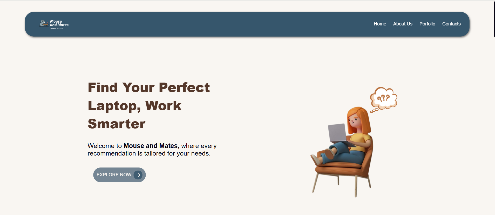
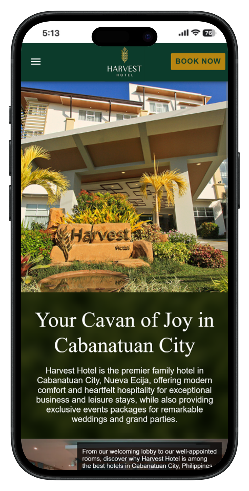
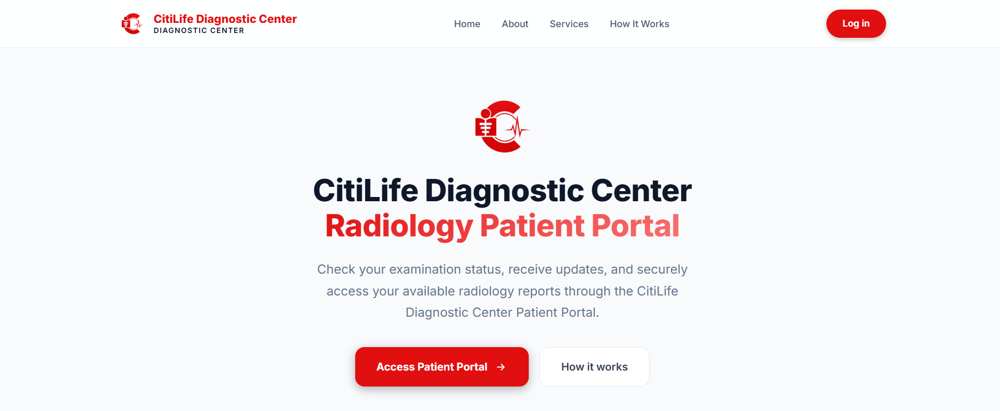
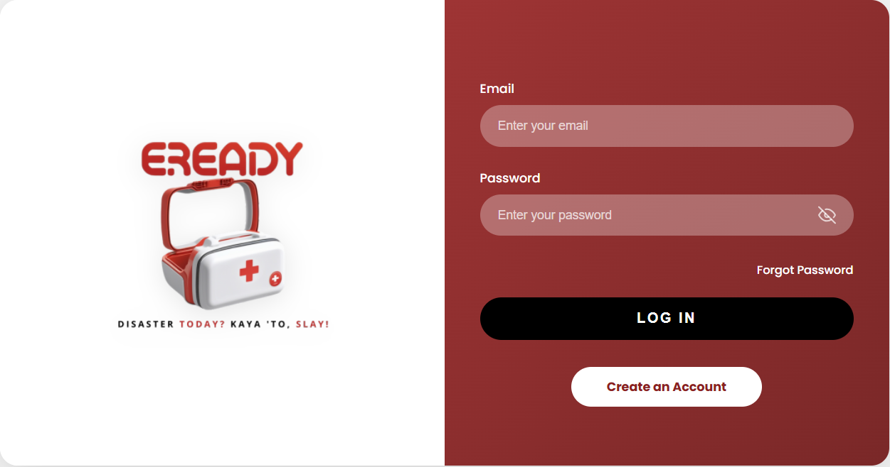
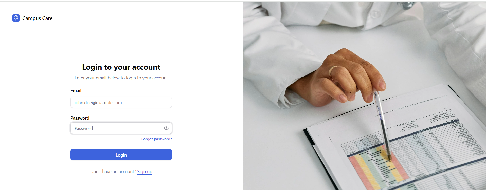

WELCOME TO MY PORTFOLIO
Hi, I'm Margie
BSIT Student &
I apply both technical and creative skills to develop digital solutions that are functional, intuitive, and visually refined.
View Resume
WELCOME TO MY PORTFOLIO
I apply both technical and creative skills to develop digital solutions that are functional, intuitive, and visually refined.
View Resume
GET TO KNOW ME
Margie C. Manabat
BSIT StudentI am Margie C. Manabat, a Bachelor of Science in Information Technology student with an interest in web development, system analysis, mobile development, UI/UX design, and graphic design.
I approach each project with a focus on functionality, usability, and visual clarity, combining technical knowledge with creative problem-solving to create meaningful digital experiences.
BS Information Technology
Philippines
MY RECENT WORK

01A laptop guide website that helps buyers find the right laptop based on their needs, preferences, and intended use.

02A hotel showcase website designed to highlight its rooms, swimming pool, amenities, and facilities, giving visitors a preview of the overall hotel experience.

03A web-based clinic system designed to streamline clinic processes and improve communication between patients, staff, and doctors even when they are working remotely.

04A PHP-based inventory system created to organize and monitor emergency supplies and equipment, making it easier to track available stocks and support emergency preparedness.

05A school clinic management system designed to help organize clinic records, monitor student health visits, and make clinic processes more efficient.
WHAT I CAN DO
I continuously develop my skills through academic projects, personal practice, and creative work.
Building responsive and functional websites using modern web technologies.
Creating clean, engaging, and user-friendly digital interfaces and visual designs.
Analyzing system requirements, identifying problems, and designing effective solutions for users and organizations.
Developing mobile applications with a focus on functionality, usability, and responsive interfaces.